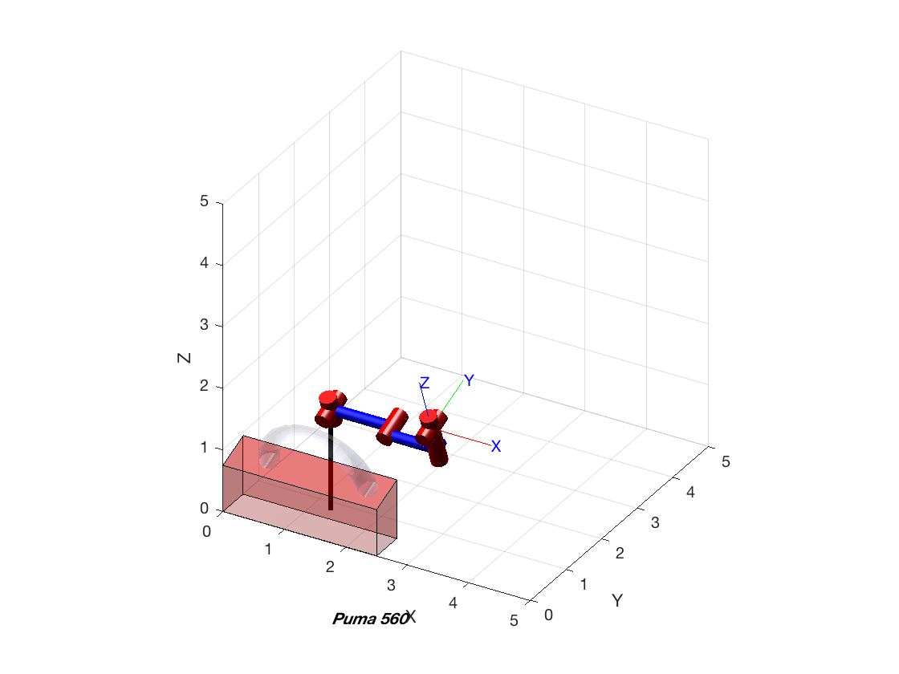

Short Project.
After atending the Laboratory session and Theory classes you must be able to answer the following questions. Add the necessary matlab and RTB sentences to this script for reporting your result. I strongly recoment to use as a reference help for the RTB the file 'robot.pdf' http://petercorke.com/wordpress/toolboxes/robotics-toolbox
Contents
Sketching the enviroment of the robotics work cell.
It is spected: main reference frames. Plot the robot Puma, draw the working table and the torus in working position. Give diferent points of view of the scenary: Top, Front, Lateral and isometrics view.
figure xlabel('x'); ylabel('y'); zlabel('z'); axis 'equal' fill3([1 3 3 1],[0 0 5 5],[4 4 6 6],'r'); alpha 0.3;
Working points.
Give here your code to get the variables to locate: a) The reference frame for all drills holes, such that z-axis is orthogonal to the surface of the torus and the x-axis is in the direction of minimun curvature. Draw in scale the frames b) Repeat the obove operation for the center of the milling groove. Draw this frames. c) The reference frames for all welding points, such that z-axis of the tool is orthogonal to the surface of the torus and the x-axis is in the direction of spiral trajectory. Draw in scale the frames
Computing motor torques for the static forces.
Give here your code to fill two tables with the motor torque at each robot pose: Table 1 (6x16): Rows are the motor torques (6x1). Columns (1x16) are the labeled drills including the initial drill before milling. Table 2 (6x8): Rows are the motor torques (6x1). Columns (1x8) are the labeled milling of the groove.